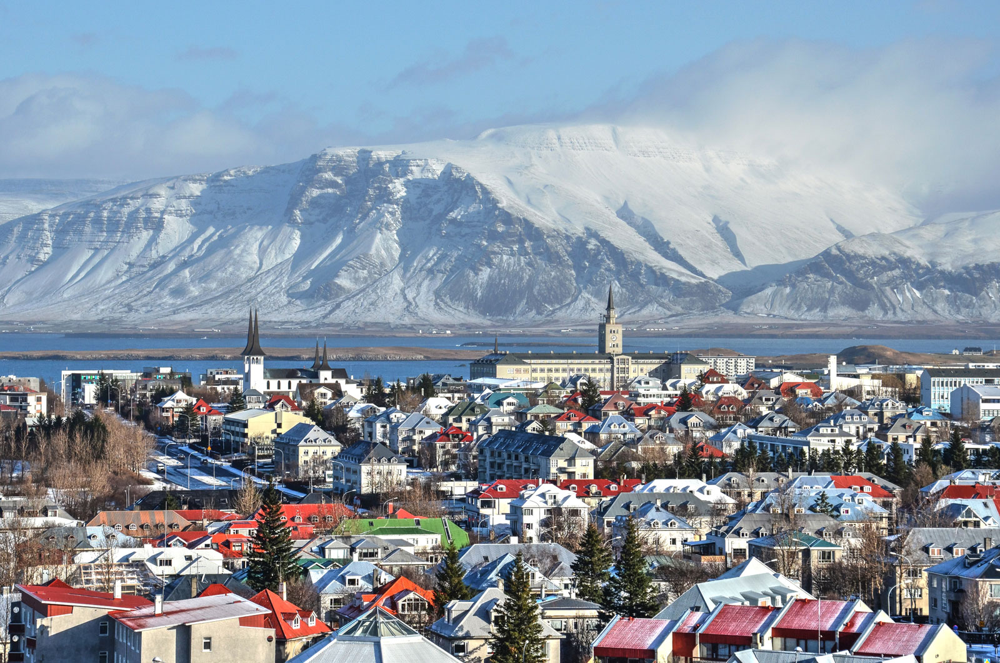

8. Visit a glacier!

This glacier is called Mýrdalsjökull. It's about 30 miles long and 20 miles wide. What makes it so special, is that you can walk up near it.
7. Visit the Golden Circle!
The Golden Circle has two main parts to it. The Geyuser and the huge waterfall.
This is a photo of the geyuser. It erupts every minute, so you have a 100% chance of seeing it!
This is the waterfall! You can stand next to it, or there is a good spot to take a photo of it that you can walk up to
6. Visit Seljalandsfoss.
Seljalandsfoss is a beautiful waterfall that you can walk behind.
5. visit Reykjavík.
Reykjavík is the capital of Iceland and has fun shops and momuments to visit!
4. Visit Hallgrimskirkja!
Hallgrimskirkja is in Reykjavík. It's an enormous cruch, 74.5 metres high; It is the largest church in Iceland.
3. Take a tour at Jökulsárlón, a glacier lake.
In Jökulsárlón, you can take tours of the ice caves and boat tours of the glaciers.
2. Play in the snow!

Sometimes, it's fun to just have a break from tours, and play in some snow. On a warmer day in Iceland, the snow will not yet have turned into ice.
1. Go to the Blue lagoon!
The blue lagoon is the number one thing to do in iceland! you swim in hot mineral water, and can get face masks and drinks, while swimming.